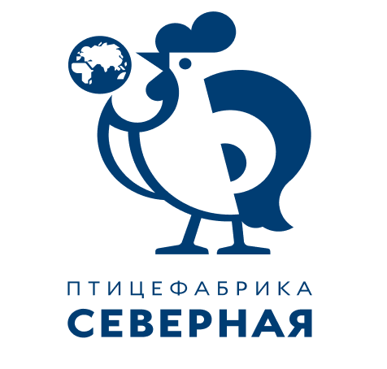
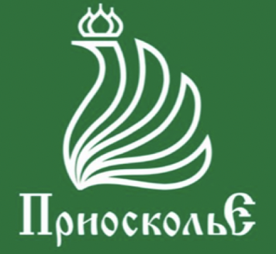

АО «Птицефабрика «Северная» – производитель мирового уровня.
АО «Птицефабрика «Северная» — ведущее предприятие
Северо-Западного региона России по производству мяса
цыплят-бройлеров мощностью 250 тыс. тонн в год в живом весе.
